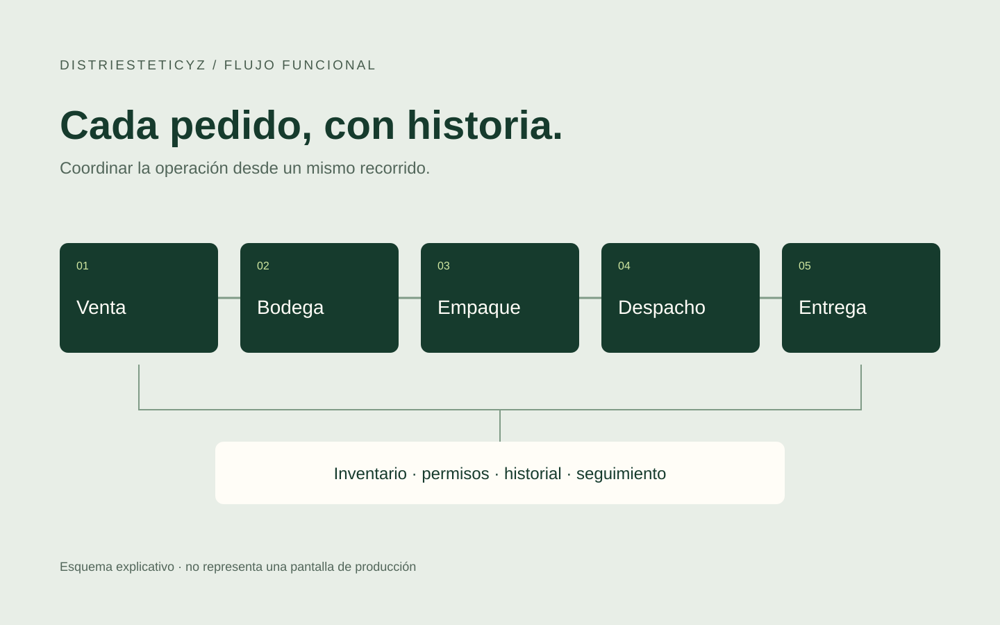

01 / VENTAS · INVENTARIO · LOGÍSTICA
Distriesteticyz
Sistema de gestión comercial que reúne pedidos, inventario, bodega, empaque y seguimiento de entregas.
Sistema comercial · nueva versión en validación
Explorar el casoSoy Juan Sebastián. Desarrollo sistemas para conectar ventas, inventario, atención y logística. Transformo procesos de negocio en herramientas que los equipos pueden usar.
Tres casos, desde el problema de negocio hasta las decisiones de implementación.

Sistema de gestión comercial que reúne pedidos, inventario, bodega, empaque y seguimiento de entregas.
Sistema comercial · nueva versión en validación
Explorar el caso 02 / REACT NATIVE · APIs · IA
02 / REACT NATIVE · APIs · IAEspacio de trabajo para preguntas y posventa de Mercado Libre, revisión de publicaciones y consulta de reportes.
Beta funcional · demostración con datos ficticios
Explorar el caso 03 / WORDPRESS · PHP · GESTIÓN
03 / WORDPRESS · PHP · GESTIÓNSistema de gestión para una iglesia: personas, visitación, cursos, asistencia, ayudas, inventario y eventos.
Versión modular · validación en entorno de pruebas
Explorar el casoMi experiencia conecta desarrollo de software con procesos comerciales: qué se vende, cómo se prepara un pedido, dónde está el inventario y qué clientes han dejado de comprar.
Formación en Ingeniería Mecatrónica en la Universidad Nacional de Colombia, sede Bogotá.
PHP, Laravel, React, JavaScript y bases de datos SQL.
Mercado Libre, WhatsApp Cloud API y OpenAI.
Rotación de productos, seguimiento de ventas y oportunidades de recuperación de clientes.
WordPress, Elementor y WooCommerce para sitios y catálogos administrables.
Busco oportunidades remotas en desarrollo Full Stack, backend e integración de sistemas. Puedo mostrarte cómo abordé estos proyectos.